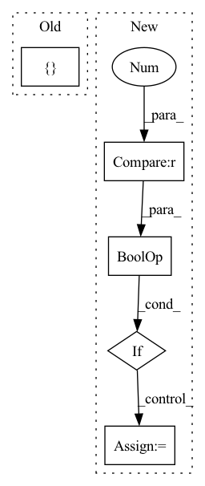

Pattern ID :169
Before Change
B, N, C = x.shape
if self.context > 1:
z = [ xAfter Change
B, N, C = x.shape
x = self.contextize(x, self.context) // (B, N, C*context)
if self.mix_base > 0 and x_base is not None:
x_base = self.contextize(x_base, self.mix_base) // (B, N, 4*mix_base)
x = torch.cat((x_base, x), dim=2)
x = x.view(B*N, -1) // (B*N, C*width)In pattern: SUPERPATTERN
Frequency: 4
Non-data size: 5
Instances Fragment ID: 790276
Project Name: mxfold/mxfold2
Commit Name: 998dd44f054b5851de1d3b751eb20091d5bf5628
Time: 2019-11-11
Author: satoken@bio.keio.ac.jp
File Name: dnnfold/fold/layers.py
M Class Name: FCUnpairedLayer
N Class Name: FCUnpairedLayer
M Method Name: forward(3)
N Method Name: forward(2)
M Parent Class: nn.Module
N Parent Class: nn.Module
M File Name: dnnfold/fold/layers.py
N File Name: dnnfold/fold/layers.py
M Start Line: 212
M End Line: 223
N Start Line: 255
N End Line: 263
Before Change
def forward(self, x, arg_route = (True, True), **kwargs):
f_args, g_args = map(lambda route: kwargs if route else {}, arg_route)
block_kwargs = { "f_args": f_args, "g_args": g_args}
return _ReversibleFunction.apply(x, self.blocks, block_kwargs)
After Change
layers_and_args = list(zip(blocks, args))
if self.training and self.layer_dropout > 0:
layers_and_args = layer_drop(layers_and_args, self.layer_dropout)
blocks, args = map(lambda ind: list(map(itemgetter(ind), layers_and_args)), (0, 1))
out = _ReversibleFunction.apply(x, blocks, args)
return torch.stack(out.chunk(2, dim=-1)).sum(dim=0) Fragment ID: 790277
Project Name: lucidrains/linear-attention-transformer
Commit Name: fa23ce09a98a63d26116e3935ad5902cf705255d
Time: 2020-06-04
Author: lucidrains@gmail.com
File Name: linear_attention_transformer/reversible.py
M Class Name: ReversibleSequence
N Class Name: ReversibleSequence
M Method Name: forward(2)
N Method Name: forward(3)
M Parent Class: nn.Module
N Parent Class: nn.Module
M File Name: linear_attention_transformer/reversible.py
N File Name: linear_attention_transformer/reversible.py
M Start Line: 118
M End Line: 121
N Start Line: 161
N End Line: 174
Before Change
generated_img = self.decoder(regularized_content_code, class_adain_params)
return {
"img": generated_img,
"content_code": content_code
}
def init(self):
self.apply(self.weights_init)
After Change
else:
regularized_content_code = content_code
if self.training and self.config["style_std"] != 0:
noise = torch.zeros_like(style_code)
noise.normal_(mean=0, std=self.config["style_std"])
regularized_style_code = style_code + noise
else:
regularized_style_code = style_code
Fragment ID: 790273
Project Name: avivga/overlord
Commit Name: dffe3cb71a1c6c5500c019edf4a07d4443b84cd8
Time: 2020-05-19
Author: avivga@gmail.com
File Name: model/modules.py
M Class Name: Generator
N Class Name: Generator
M Method Name: forward(4)
N Method Name: forward(4)
M Parent Class: nn.Module
N Parent Class: nn.Module
M File Name: model/modules.py
N File Name: model/modules.py
M Start Line: 18
M End Line: 38
N Start Line: 52
N End Line: 88